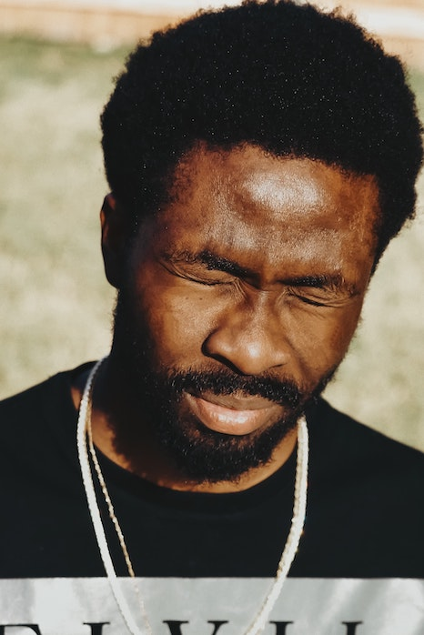

Becoming a photographer was an easy choice for me. It felt like it was my destiny. Capturing a moment, an emotion, a situation, a place, or a glimmer of light and making them immortal, that’s what drives me.
We spend our lives searching for happiness, and once we find it, we want to celebrate it as a photograph to share with the people we love or to show to as many people as possible.
This is what I have to offer, capturing these beautiful moments from my perspective, my approach, and my technique. Immortalize these moments so they bring you love, happiness, affection, and light every time you look at your photos.
Portfolio

<
>
A portrait is not a likeness. The moment an emotion or fact is transformed into a photograph, it is no longer a fact but an opinion. There is no such thing as inaccuracy in a photograph. All photographs are accurate. None of them is truth.
- Richard Avedon
My services
Photo Shoots
Capture your most precious moments and make them unforgettable. I can travel anywhere in Île-de-France to take your photos.
350€/half-day
Equipment and travel included
Retouching
Are you looking to retouch your photos for a professional look? Optimally rendered images for your publications.
50€/photo
Two revisions per photo
Photo Albums
Personalized photo albums of cherished moments to share with loved ones or clients.
400€ letter-sized album
30 double-sided pages>
Subconsciously, I think that I’m always searching for a look, an expression, a feature, or a sense of nostalgia capable of defining—or more specifically—revealing life.